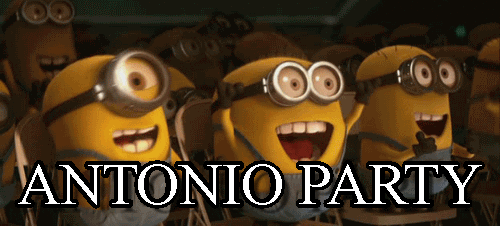
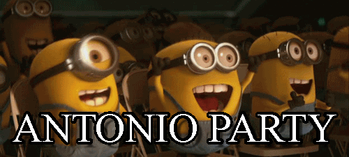

The Antonio Page
This page is designed to represent the Antonioness of The Antonio. This page follows Antonio in his Antonio based activities. This site is in no way associated with Antonio, Inc.
This page is designed to represent the Antonioness of The Antonio. This page follows Antonio in his Antonio based activities. This site is in no way associated with Antonio, Inc.
